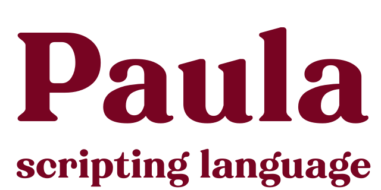

Small and stand-alone
Minimal external dependencies and built-in parser. The whole thing only takes up a few dozen kilobytes.
No runtime memory allocation
Reserve all the required memory at startup for performance, predictability, and safety.
Easy to expand
Add callbacks from your source code with a simple API.
Paula script example: a script that prints 20 Fibonacci numbers (n=20).
n:20; i:0; a:0; b:1 while(i < n) c:a+b print(c, " ") a:b; b:c i:i+1C++ callback example: create a C++ callback and call it from script.
const paula::Error* myCallback (paula::Args&args) {
for (int i=0; i<args.count(); i++) {
char * value;
if (args.get(i).getChars(value)) {
std::cout<<"arg "<<i<<": "<<value<<std::endl;
}
}
return NO_ERROR;
}
void main()
{
// register a callback for Paula engine
auto error = paula::addCallback("test", myCallback);
// call it from a script
error = paula::run("test(\"foo\", \"bar\")");
}
If you run the code, it prints
arg 0: foo arg 1: bar
|
For technical information and to try it yourself see the GitHub project: |
Doxygen docs for programmers: |
| GitHub: paula-script | Paula C++ API |
What is a scripting language?
Computer programs or apps consist of- Machine code: instructions that tell CPU what to do.
- Data: pictures, text, scripts, etc. that the app uses.

CPU (Central Processing Unit) is a microprocessor and the "brain" of the computer, smart phone, or other electronic gadget. It reads and executes the machine code to make the app run.
Machine code is executed by the CPU whereas scripts are interpreted and executed by the program.
Inside the machine code is the script interpreter that does what the script it tells it to do. So, the CPU executes the script interpreter (Paula), and the interpreter executes the script, if that makes any sense.

Economic scripting
Paula (meaning "small" in Latin) is a compact language designed to take up minimal space in a program. This is especially important in constrained environments, such as electronic devices, where the interpreter, other code, and scripts must all fit within a limited memory (RAM).


Memory allotion
Most script interpreters allocate memory for their use during runtime. Allocated memory is freed when it's not needed anymore.Usually, this approach is fine and practical. Problems arise, however, if more memory is allocated than is available, causing the program to slow down or crash. This can happen, for example, when large files are loaded into memory for processing.

The downside is that the user must know how much memory Paula will need and define it when launching the program. However, the guarantee that users can specify the required memory themselves provides a sense of security and reliability to Paula's users.

Meanwhale, 2025